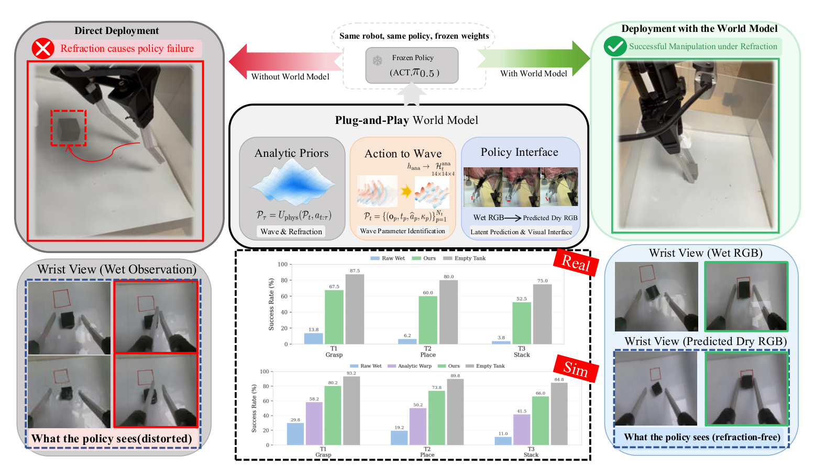
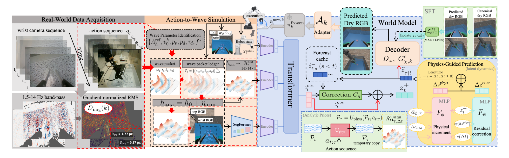

Physics-guided prediction
Analytic wave and refraction priors guide learned latent dynamics.
Cross-Medium Robot Manipulation
A Plug-and-Play World Model with Analytic Priors
Predicting refraction-free observations at action execution time for frozen manipulation policies.
Simulation and Real-World Demonstrations
In One Sentence
In cross-medium manipulation, cameras remain above water while robot tools operate underwater. Robot-induced waves continually change refraction, making submerged objects appear to move and causing policies trained on clear observations to fail.
Our plug-and-play world model combines analytic wave and refraction priors with learned residual dynamics. It reconstructs the current scene, predicts dry RGB at the scheduled start of action execution, and serves those observations to existing visuomotor and vision-language-action policies without changing their weights.
Analytic wave and refraction priors guide learned latent dynamics.
Predictions are aligned with when the next action chunk begins.
Only policy-facing RGB generators are adapted; policies stay frozen.

Method
The model anticipates how robot motion reshapes the water surface, then predicts the observation the policy should see when its next action begins.

Forward kinematics and calibrated surface dynamics convert committed robot actions into an analytic forecast of waves and refraction.
Wet RGB, robot state, analytic descriptors, and valid cached forecasts jointly update the latent state and predict future dry views.
View-specific RGB generators match each policy's observation format while the shared dynamics core and downstream policy remain frozen.
Qualitative Results
Simulation rollouts with ACT, Diffusion Policy, π0.5, and SmolVLA across grasping, placing, and stacking.
With-and-without world-model comparisons across four frozen policy backends and all three tasks.
Quantitative Results
Averages are computed across the tasks and policy backends evaluated in this project. The Empty Tank condition is a water-free reference rather than a guaranteed upper bound.
Policies ACT, Diffusion Policy, π0.5, SmolVLA
Tasks Grasping, placing, stacking
Domains Simulation and real world